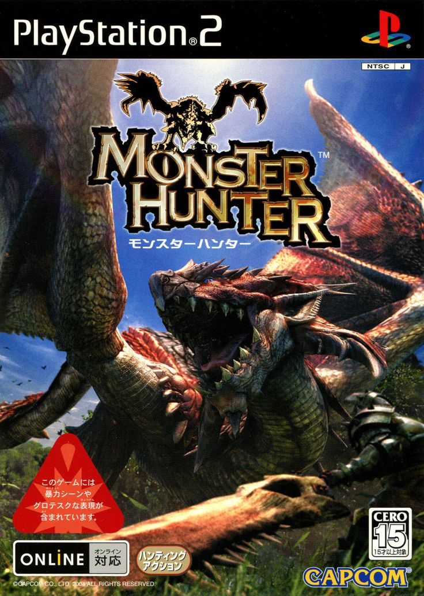
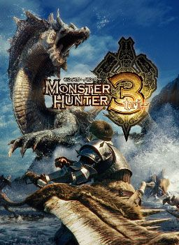
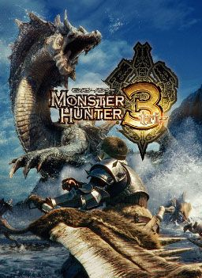
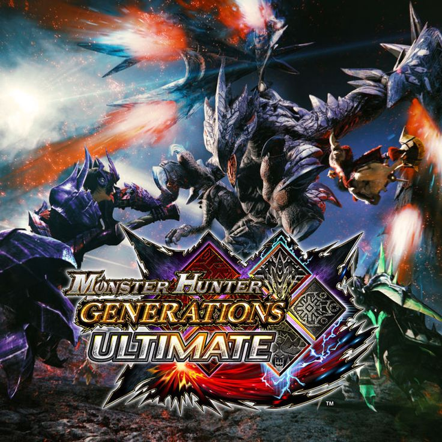
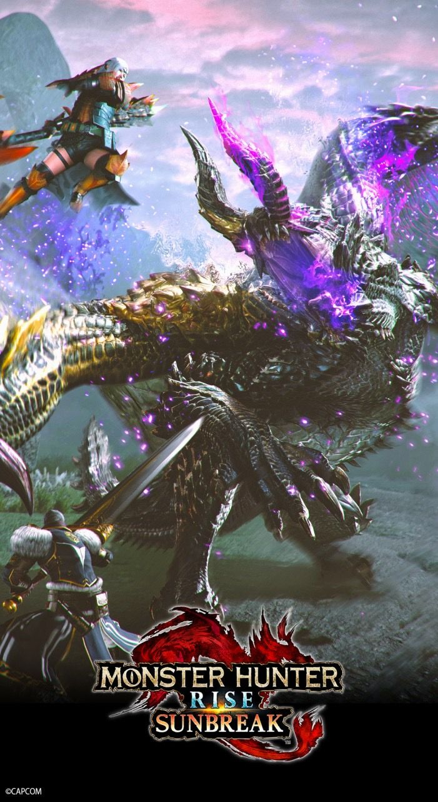
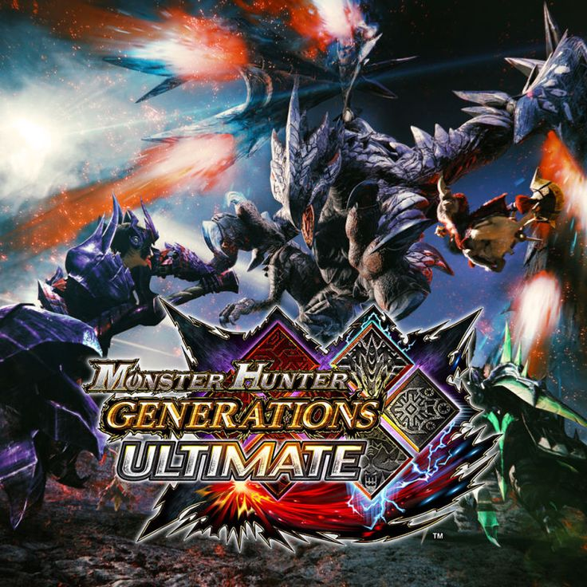
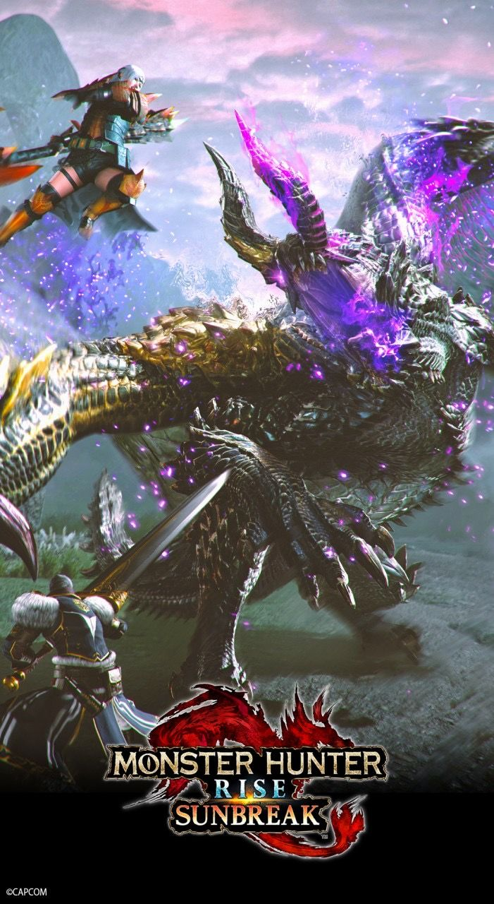

La primera 1ra generación, cunenta con 2 entregas

La aegunda 2da generación, cunenta con 2 entregas
La tercera 3ra generación, cunenta con 3 entregas
La Cuarta 4ta generación, cunenta con 2 entregas
La quinta 5ta generación, cunenta con 2 entregas
La sexta 6ta generación, cunenta con 1 entregas
 

 


